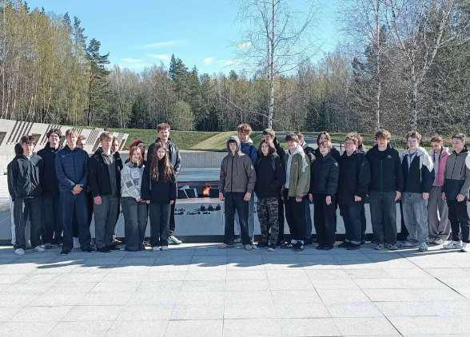
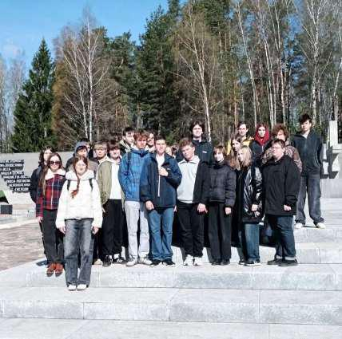

ХАТЫНЬ – НАША ПАМЯТЬ И БОЛЬ
В преддверии Дня Победы учащиеся 10-х классов нашей гимназии совершили поездку в Государственный мемориальный комплекс «Хатынь». Этот визит стал не просто экскурсией, а глубоким эмоциональным уроком истории, который невозможно забыть.

22 марта 1943 года – дата, навсегда вписанная в летопись Великой Отечественной войны кровавыми чернилами. В этот день карательный отряд фашистов сжег дотла вместе с жителями небольшую белорусскую деревню Хатынь. Из 26 дворов не уцелел ни один, из 149 жителей – включая 75 детей – спастись удалось лишь троим.
Прибыв на место трагедии, наши десятиклассники сразу ощутили особую, щемящую тишину этого места. Единственный уцелевший «колокол» деревни, который сегодня стоит на месте сгоревшего дома, словно застыл в вечном крике.
Ребята прошли по брусчатке, где вместо домов – бетонные срубы с обелисками-печными трубами. Каждый сруб напоминает о конкретной семье, а навечно застывший колокол звонит в память о погибших детях. Центральный монумент «Непокоренный человек» с ребенком на руках произвел на старшеклассников неизгладимое впечатление. Многие не смогли сдержать слез, осознавая весь масштаб трагедии.
Особое место в экскурсии заняло «Кладбище деревень» – символическое поле, где расположены 185 братских могил. Каждая из них напоминает о белорусской деревне, разделившей судьбу Хатыни. Стоя у Стены Памяти с названиями концлагерей, десятиклассники задумались о том, как хрупок мир и как важно сохранять историческую правду.
«Я много раз слышал о Хатыни, но когда видишь это своими глазами – внутри все переворачивается. Больше всего меня тронули детские игрушки, ведь это была последняя игрушка, которую дети взяли в сарай, где их сжигали заживо», – поделился впечатлениями учащийся 10 «А» класса Симанков Егор.
